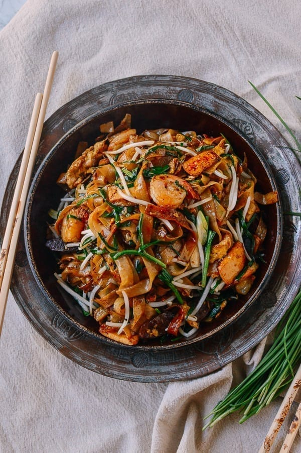

Char Kway Teow
Char Kway Teow is a beloved Malaysian stir-fried noodle dish made with flat rice noodles, prawns, Chinese sausage, eggs, and bean sprouts, all tossed together in a smoky, flavorful soy sauce. This dish exemplifies the vibrant street food culture of Malaysia.

| Recipe Details |
| Portion |
4 servings |
| Preparation Time |
20 minutes |
| Cooking Time |
10 minutes |
| Difficulty |
Medium |
| Cuisine |
Malaysian |
| Taste Profile |
Savory, slightly sweet, with a hint of smokiness |
| Serving Suggestions |
Best served hot, garnished with spring onions |
| Nutrition Facts (per serving) |
| Calories |
450 kcal |
| Fat |
18g |
| Saturated Fat |
5g |
| Carbohydrates |
52g |
| Sugar |
4g |
| Protein |
20g |
| Sodium |
900mg |
| Ingredients |
Measurement |
| Flat rice noodles, soaked |
400 grams |
| Prawns, peeled and deveined |
200 grams |
| Chinese sausage, sliced thinly |
100 grams |
| Eggs |
2 large |
| Bean sprouts, rinsed |
100 grams |
| Dark soy sauce |
2 tbsp |
| Light soy sauce |
1 tbsp |
| Chili paste (optional) |
1 tbsp |
| Spring onions, chopped |
for garnish |
| Cooking oil |
2 tbsp |
Instructions:
- Prepare the noodles: Soak flat rice noodles in hot water for 10-15 minutes until they are softened. Drain and set aside.
- Preheat the wok: Heat a large wok or frying pan over high heat. Add 1 tablespoon of cooking oil and swirl to coat the surface.
- Cook the sausage and prawns: Add the sliced Chinese sausage and cook for 1-2 minutes until it releases its oils. Add the prawns and stir-fry until they turn pink and are just cooked through, about 2 minutes. Remove both from the wok and set aside.
- Scramble the eggs: Add another tablespoon of oil to the wok. Crack in the eggs and scramble them quickly, breaking them into small pieces as they cook.
- Add the noodles and sauces: Return the sausage and prawns to the wok. Add the drained noodles, dark soy sauce, light soy sauce, and chili paste (if using). Toss everything together until the noodles are well-coated and heated through, about 2-3 minutes.
- Finish with bean sprouts: Add the bean sprouts and stir-fry briefly, just until they are slightly wilted but still crisp, about 1 minute.
- Serve: Transfer the Char Kway Teow to serving plates and garnish with chopped spring onions. Serve hot and enjoy!